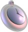

 Fob Help | |
Contents |
Fob is a free dock-based kitchen timer for Mac OS X by Leaky Puppy Software. It allows a user to specify possibly multiple timers to count down for a specified interval. When an alarm runs out of time, Fob will make itself conspicuous. (Fob is not an alarm clock or stopwatch, i.e., it will not count to a particular time, nor count up.) The presence of presets is Fob's main gimmick for decreasing the effort required to start an alarm. To draw an analogy to web browsers, they are a kind of time bookmark for commonly used alarms. For example, I may define a six minute preset to let tea steep. Thence, I need only choose "Tea" from my preset list, and I never need deal with a neglected lukewarm cup in my microwave again. Starting a preset alarm requires only one mouse click rather than many clicks and typing. Fob thus appeals to the unspeakably lazy and undisciplined. Needless to say I will make several million dollars. Fob's executable and source code are distributed under the GNU GPL. A copy of the warranty and license for Fob are provided under Warranty and Copying/License, respectively. If the source did not come with the distribution, the source code is available here. For more information, write me at twf@duke.edu or tfinley@mac.com. |